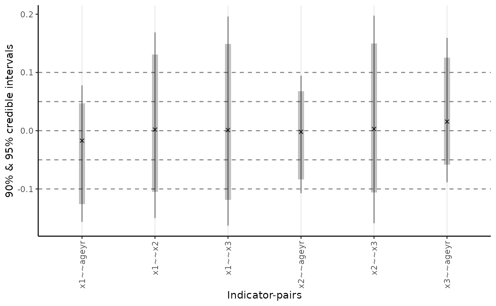
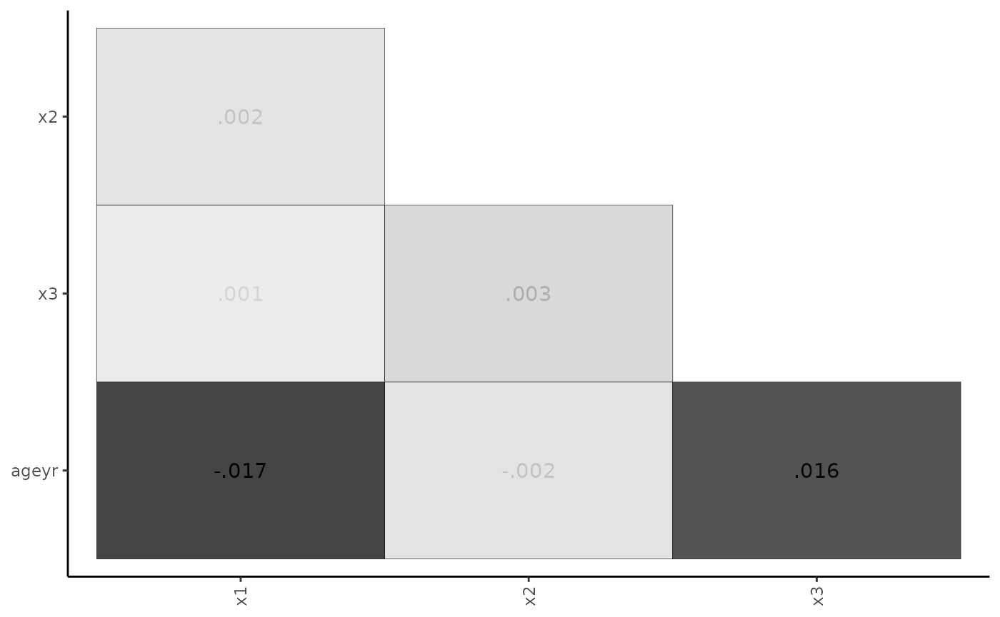
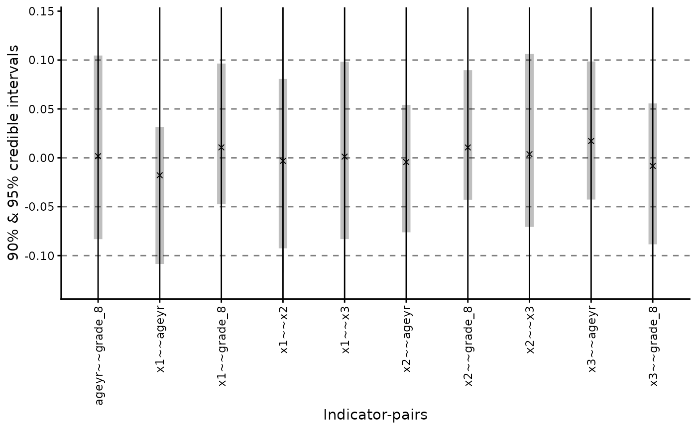
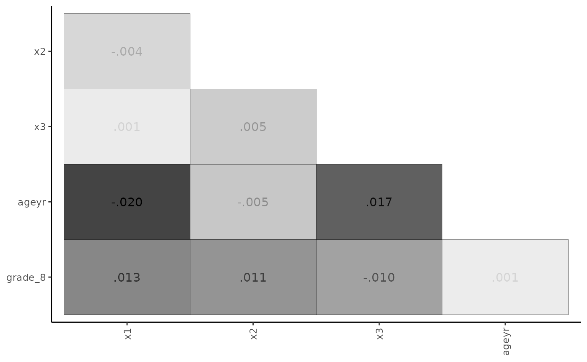

Multiple Indicators and Multiple Causes (MIMIC) Model
Xiaolu Fan, James Uanhoro
mimic.RmdNow we use theminorbsem() function to fit a MIMIC model.
MIMIC stands for the “Multiple Indicators Multiple Causes” model, where
the latent factor has observed variable predictors. The
minorbsem package contains a built-in dataset called
HS, which is a part of classic Holzinger-Swineford dataset.
This dataset is discussed in the CFA
tutorial.
For this example, we assume the following:
- There is a visual factor reflected in items
x1,x2andx3 - This factor is directly predicted by age and grade.
- Grade is directly predicted by age.
We are interested in the total effects of age and grade on the visual factor.
We begin by loading the package:
## ## ################################################################################# This is minorbsem 0.2.15##
## All users of R (or SEM) are invited to report bugs, submit functions or ideas
## for functions. An efficient way to do this is to open an issue on GitHub
## https://github.com/jamesuanhoro/minorbsem/issues/.## ###############################################################################The first six lines of the dataset:
head(HS)## id sex ageyr agemo school grade x1 x2 x3 x4 x5 x6 x7 x8
## 1 1 1 13 1 Pasteur 7 3.333333 7.75 0.375 2.333333 5.75 1.2857143 3.391304 5.75
## 2 2 2 13 7 Pasteur 7 5.333333 5.25 2.125 1.666667 3.00 1.2857143 3.782609 6.25
## 3 3 2 13 1 Pasteur 7 4.500000 5.25 1.875 1.000000 1.75 0.4285714 3.260870 3.90
## 4 4 1 13 2 Pasteur 7 5.333333 7.75 3.000 2.666667 4.50 2.4285714 3.000000 5.30
## 5 5 2 12 2 Pasteur 7 4.833333 4.75 0.875 2.666667 4.00 2.5714286 3.695652 6.30
## 6 6 2 14 1 Pasteur 7 5.333333 5.00 2.250 1.000000 3.00 0.8571429 4.347826 6.65
## x9
## 1 6.361111
## 2 7.916667
## 3 4.416667
## 4 4.861111
## 5 5.916667
## 6 7.500000Data preparation
The scale of data is important for setting priors on model
parameters. The default priors for models fit with
minorbsem are reasonable when variables have standard
deviations close to 1. For this reason, we first check the standard
deviations of the relevant variables for this analysis:
apply(
HS[, c(paste0("x", 1:3), "ageyr")], # select relevant variables
2, sd # compute SD of each variable
)## x1 x2 x3 ageyr
## 1.167432 1.177451 1.130979 1.050391All variables have standard deviations close to 1, so we can move forward with the data as they are. Otherwise, we would recommend re-scaling the variables.1
We need to create dummy variables for the grade. All
eighth graders are coded 1 and seventh graders are all 0.
HS$grade_8 <- ifelse(HS$grade == "8", 1, 0)Model One
Model Syntax
The model syntax is lavaan-style. In the first syntax, there is only
one predictor age.
mimic_syntax_1 <-
"Visual =~ x1 + x2 + x3
Visual ~ fageyr
fageyr =~ ageyr
ageyr ~~ 0 * ageyr
"This model defines a Visual latent factor with three observed
variables x1, x2 and x3, and
specifies a regression of Visual on
fageyr.fageyr is latent variable created to
represent the observed year variable, ageyr. The last line
of this syntax fixes the residual variance of ageyr to 0 to
ensure all of the variance in ageyr is contained within
fageyr, i.e. fageyr is the same as
ageyr.
Fit the Model
We run the analysis using the minorbsem() function. By
default, the function assumes that minor factors influence the
covariance between the variables. minorbsem then prints out
the iterations from Stan – we show these iterations once so the reader
knows what to expect.
fit_mimic_1 <- minorbsem(
model = mimic_syntax_1,
data = HS
)## Processing user input ...## User input fully processed :)
## Now to modeling.## Fitting Stan model ...## Init values were only set for a subset of parameters.
## Missing init values for the following parameters:
## - chain 1: gdp_alpha, loadings, res_sds_u, phi_mat_chol, res_cor_01, coefs, sigma_loadings_complex, gdp_loadings_complex, Sigma
## - chain 2: gdp_alpha, loadings, res_sds_u, phi_mat_chol, res_cor_01, coefs, sigma_loadings_complex, gdp_loadings_complex, Sigma
## - chain 3: gdp_alpha, loadings, res_sds_u, phi_mat_chol, res_cor_01, coefs, sigma_loadings_complex, gdp_loadings_complex, Sigma
##
## To disable this message use options(cmdstanr_warn_inits = FALSE).## Running MCMC with 3 chains, at most 2 in parallel...
##
## Chain 1 Iteration: 1 / 2000 [ 0%] (Warmup)## Chain 1 Informational Message: The current Metropolis proposal is about to be rejected because of the following issue:## Chain 1 Exception: lkj_corr_cholesky_lpdf: Random variable[2] is 0, but must be positive! (in '/tmp/RtmpFjMc1R/model-217273132646.stan', line 324, column 2 to column 48)## Chain 1 If this warning occurs sporadically, such as for highly constrained variable types like covariance matrices, then the sampler is fine,## Chain 1 but if this warning occurs often then your model may be either severely ill-conditioned or misspecified.## Chain 1## Chain 1 Informational Message: The current Metropolis proposal is about to be rejected because of the following issue:## Chain 1 Exception: cholesky_decompose: Matrix m is not positive definite (in '/tmp/RtmpFjMc1R/model-217273132646.stan', line 432, column 6 to column 81)## Chain 1 If this warning occurs sporadically, such as for highly constrained variable types like covariance matrices, then the sampler is fine,## Chain 1 but if this warning occurs often then your model may be either severely ill-conditioned or misspecified.## Chain 1## Chain 2 Iteration: 1 / 2000 [ 0%] (Warmup)## Chain 2 Informational Message: The current Metropolis proposal is about to be rejected because of the following issue:## Chain 2 Exception: cholesky_decompose: Matrix m is not positive definite (in '/tmp/RtmpFjMc1R/model-217273132646.stan', line 432, column 6 to column 81)## Chain 2 If this warning occurs sporadically, such as for highly constrained variable types like covariance matrices, then the sampler is fine,## Chain 2 but if this warning occurs often then your model may be either severely ill-conditioned or misspecified.## Chain 2## Chain 2 Informational Message: The current Metropolis proposal is about to be rejected because of the following issue:## Chain 2 Exception: cholesky_decompose: Matrix m is not positive definite (in '/tmp/RtmpFjMc1R/model-217273132646.stan', line 432, column 6 to column 81)## Chain 2 If this warning occurs sporadically, such as for highly constrained variable types like covariance matrices, then the sampler is fine,## Chain 2 but if this warning occurs often then your model may be either severely ill-conditioned or misspecified.## Chain 2## Chain 2 Informational Message: The current Metropolis proposal is about to be rejected because of the following issue:## Chain 2 Exception: lkj_corr_cholesky_lpdf: Random variable[2] is 0, but must be positive! (in '/tmp/RtmpFjMc1R/model-217273132646.stan', line 324, column 2 to column 48)## Chain 2 If this warning occurs sporadically, such as for highly constrained variable types like covariance matrices, then the sampler is fine,## Chain 2 but if this warning occurs often then your model may be either severely ill-conditioned or misspecified.## Chain 2## Chain 2 Informational Message: The current Metropolis proposal is about to be rejected because of the following issue:## Chain 2 Exception: cholesky_decompose: Matrix m is not positive definite (in '/tmp/RtmpFjMc1R/model-217273132646.stan', line 432, column 6 to column 81)## Chain 2 If this warning occurs sporadically, such as for highly constrained variable types like covariance matrices, then the sampler is fine,## Chain 2 but if this warning occurs often then your model may be either severely ill-conditioned or misspecified.## Chain 2## Chain 1 Iteration: 200 / 2000 [ 10%] (Warmup)
## Chain 2 Iteration: 200 / 2000 [ 10%] (Warmup)
## Chain 1 Iteration: 400 / 2000 [ 20%] (Warmup)
## Chain 2 Iteration: 400 / 2000 [ 20%] (Warmup)
## Chain 1 Iteration: 600 / 2000 [ 30%] (Warmup)
## Chain 2 Iteration: 600 / 2000 [ 30%] (Warmup)
## Chain 1 Iteration: 800 / 2000 [ 40%] (Warmup)
## Chain 2 Iteration: 800 / 2000 [ 40%] (Warmup)
## Chain 1 Iteration: 1000 / 2000 [ 50%] (Warmup)
## Chain 1 Iteration: 1001 / 2000 [ 50%] (Sampling)
## Chain 2 Iteration: 1000 / 2000 [ 50%] (Warmup)
## Chain 2 Iteration: 1001 / 2000 [ 50%] (Sampling)
## Chain 1 Iteration: 1200 / 2000 [ 60%] (Sampling)
## Chain 2 Iteration: 1200 / 2000 [ 60%] (Sampling)
## Chain 2 Iteration: 1400 / 2000 [ 70%] (Sampling)
## Chain 1 Iteration: 1400 / 2000 [ 70%] (Sampling)
## Chain 1 Iteration: 1600 / 2000 [ 80%] (Sampling)
## Chain 2 Iteration: 1600 / 2000 [ 80%] (Sampling)
## Chain 2 Iteration: 1800 / 2000 [ 90%] (Sampling)
## Chain 1 Iteration: 1800 / 2000 [ 90%] (Sampling)
## Chain 2 Iteration: 2000 / 2000 [100%] (Sampling)
## Chain 2 finished in 5.4 seconds.
## Chain 1 Iteration: 2000 / 2000 [100%] (Sampling)
## Chain 3 Iteration: 1 / 2000 [ 0%] (Warmup)## Chain 3 Informational Message: The current Metropolis proposal is about to be rejected because of the following issue:## Chain 3 Exception: cholesky_decompose: A is not symmetric. A[1,2] = -inf, but A[2,1] = -inf (in '/tmp/RtmpFjMc1R/model-217273132646.stan', line 432, column 6 to column 81)## Chain 3 If this warning occurs sporadically, such as for highly constrained variable types like covariance matrices, then the sampler is fine,## Chain 3 but if this warning occurs often then your model may be either severely ill-conditioned or misspecified.## Chain 3## Chain 3 Informational Message: The current Metropolis proposal is about to be rejected because of the following issue:## Chain 3 Exception: cholesky_decompose: A is not symmetric. A[1,2] = -inf, but A[2,1] = -inf (in '/tmp/RtmpFjMc1R/model-217273132646.stan', line 432, column 6 to column 81)## Chain 3 If this warning occurs sporadically, such as for highly constrained variable types like covariance matrices, then the sampler is fine,## Chain 3 but if this warning occurs often then your model may be either severely ill-conditioned or misspecified.## Chain 3## Chain 3 Informational Message: The current Metropolis proposal is about to be rejected because of the following issue:## Chain 3 Exception: cholesky_decompose: A is not symmetric. A[1,2] = -inf, but A[2,1] = -inf (in '/tmp/RtmpFjMc1R/model-217273132646.stan', line 432, column 6 to column 81)## Chain 3 If this warning occurs sporadically, such as for highly constrained variable types like covariance matrices, then the sampler is fine,## Chain 3 but if this warning occurs often then your model may be either severely ill-conditioned or misspecified.## Chain 3## Chain 3 Informational Message: The current Metropolis proposal is about to be rejected because of the following issue:## Chain 3 Exception: cholesky_decompose: A is not symmetric. A[1,2] = -inf, but A[2,1] = -inf (in '/tmp/RtmpFjMc1R/model-217273132646.stan', line 432, column 6 to column 81)## Chain 3 If this warning occurs sporadically, such as for highly constrained variable types like covariance matrices, then the sampler is fine,## Chain 3 but if this warning occurs often then your model may be either severely ill-conditioned or misspecified.## Chain 3## Chain 3 Informational Message: The current Metropolis proposal is about to be rejected because of the following issue:## Chain 3 Exception: lkj_corr_cholesky_lpdf: Random variable[2] is 0, but must be positive! (in '/tmp/RtmpFjMc1R/model-217273132646.stan', line 324, column 2 to column 48)## Chain 3 If this warning occurs sporadically, such as for highly constrained variable types like covariance matrices, then the sampler is fine,## Chain 3 but if this warning occurs often then your model may be either severely ill-conditioned or misspecified.## Chain 3## Chain 3 Informational Message: The current Metropolis proposal is about to be rejected because of the following issue:## Chain 3 Exception: cholesky_decompose: A is not symmetric. A[1,2] = -inf, but A[2,1] = -inf (in '/tmp/RtmpFjMc1R/model-217273132646.stan', line 432, column 6 to column 81)## Chain 3 If this warning occurs sporadically, such as for highly constrained variable types like covariance matrices, then the sampler is fine,## Chain 3 but if this warning occurs often then your model may be either severely ill-conditioned or misspecified.## Chain 3## Chain 1 finished in 5.5 seconds.
## Chain 3 Iteration: 200 / 2000 [ 10%] (Warmup)## Chain 3 Informational Message: The current Metropolis proposal is about to be rejected because of the following issue:## Chain 3 Exception: cholesky_decompose: Matrix m is not positive definite (in '/tmp/RtmpFjMc1R/model-217273132646.stan', line 432, column 6 to column 81)## Chain 3 If this warning occurs sporadically, such as for highly constrained variable types like covariance matrices, then the sampler is fine,## Chain 3 but if this warning occurs often then your model may be either severely ill-conditioned or misspecified.## Chain 3## Chain 3 Iteration: 400 / 2000 [ 20%] (Warmup)
## Chain 3 Iteration: 600 / 2000 [ 30%] (Warmup)## Chain 3 Informational Message: The current Metropolis proposal is about to be rejected because of the following issue:## Chain 3 Exception: cholesky_decompose: Matrix m is not positive definite (in '/tmp/RtmpFjMc1R/model-217273132646.stan', line 432, column 6 to column 81)## Chain 3 If this warning occurs sporadically, such as for highly constrained variable types like covariance matrices, then the sampler is fine,## Chain 3 but if this warning occurs often then your model may be either severely ill-conditioned or misspecified.## Chain 3## Chain 3 Iteration: 800 / 2000 [ 40%] (Warmup)
## Chain 3 Iteration: 1000 / 2000 [ 50%] (Warmup)
## Chain 3 Iteration: 1001 / 2000 [ 50%] (Sampling)
## Chain 3 Iteration: 1200 / 2000 [ 60%] (Sampling)
## Chain 3 Iteration: 1400 / 2000 [ 70%] (Sampling)
## Chain 3 Iteration: 1600 / 2000 [ 80%] (Sampling)
## Chain 3 Iteration: 1800 / 2000 [ 90%] (Sampling)
## Chain 3 Iteration: 2000 / 2000 [100%] (Sampling)
## Chain 3 finished in 5.2 seconds.
##
## All 3 chains finished successfully.
## Mean chain execution time: 5.4 seconds.
## Total execution time: 10.8 seconds.## Warning: 240 of 3000 (8.0%) transitions hit the maximum treedepth limit of 10.
## See https://mc-stan.org/misc/warnings for details.## Parameter estimates (method = normal, sample size(s) = 301)
## from op to mean sd 5.000% 95.000% rhat ess_bulk
## ───────────────────────────────────────────────────────────────────────────────
## Goodness of fit
## ───────────────────────────────────────────────────────────────────────────────
## PPP 0.504 1.001 1884
## RMSE 0.065 0.052 0.005 0.166 1.001 714
## ───────────────────────────────────────────────────────────────────────────────
## Latent regression coefficients (outcome ~
## predictor)
## ───────────────────────────────────────────────────────────────────────────────
## Visual ~ fageyr -0.013 0.103 -0.174 0.152 1.000 2200
## ───────────────────────────────────────────────────────────────────────────────
## R square
## ───────────────────────────────────────────────────────────────────────────────
## Visual ~~ Visual 0.011 0.022 0.000 0.041 1.000 1868
## fageyr ~~ fageyr 0.000 0.000 0.000 0.000
## ───────────────────────────────────────────────────────────────────────────────
## Factor loadings
## ───────────────────────────────────────────────────────────────────────────────
## Visual =~ x1 0.731 0.176 0.469 1.067 1.003 1238
## Visual =~ x2 0.541 0.146 0.319 0.776 1.002 1890
## Visual =~ x3 0.800 0.181 0.502 1.102 1.003 1428
## fageyr =~ ageyr 1.057 0.044 0.985 1.132 1.003 3580
## ───────────────────────────────────────────────────────────────────────────────
## Inter-factor correlations
## ───────────────────────────────────────────────────────────────────────────────
## fageyr ~~ Visual 0.000 0.000 0.000 0.000
## ───────────────────────────────────────────────────────────────────────────────
## Residual variances
## ───────────────────────────────────────────────────────────────────────────────
## x1 ~~ x1 0.812 0.261 0.237 1.168 1.003 1202
## x2 ~~ x2 1.092 0.170 0.820 1.339 1.000 1911
## x3 ~~ x3 0.620 0.271 0.077 1.032 1.003 1396
## ageyr ~~ ageyr 0.000 0.000 0.000 0.000
## ───────────────────────────────────────────────────────────────────────────────
##
##
## Column names: from, op, to, mean, sd, 5%, 95%, rhat, ess_bulkOutput structure
At the top of the results table, method = normal
indicates the approach of estimating the residual covariances between
all items: the belief is that the standardized residual covariances
(SRCs) which reflect minor factor influences are normally distributed
with zero mean. The table also prints out the sample size of 301 – only
complete rows in the data are retained for analysis.
We describe the column headers. The from,
op and to combination describe the type of
parameter being reported according to lavaan-style syntax. For example,
the Visual =~ x1 row describes the loading from the visual
factor to item x1. The mean, sd and percentage
columns are descriptive statistics of posterior distributions. The
mean and sd function like the estimate and
standard error in standard frequentist statistics. The percentage
columns are credible intervals. By default, they are 90% credible
intervals, i.e. given the prior and data, there is a 90% chance the
parameter falls in this interval. rhat (pronounced R-hat)
and ess_bulk columns are the potential scale reduction
factor
()
and effective sample size (ESS) respectively (Vehtari et al. 2021) – they are useful for
checking parameter convergence. For
,
values very close to 1 are preferable. For ESS, larger values are
preferable.
A final analysis in a manuscript would ideally have all parameters
with
under 1.01 and ESS above 400 for one to be sure parameter estimates have
converged (Vehtari et al. 2021). An easy
way to meet these expectations is to increase the number of requested
samples when calling minorbsem() via the
warmup = and sampling = arguments, see
?minorbsem.
The parameter estimates are presented by the type of parameter.
Goodness of fit
PPP. The first section of results contains
parameters that help assess global model fit. “PPP” is the posterior
predictive p-value in the form described by Muthén and Asparouhov (2012), and is akin to a
test in standard SEMs. It is conventional to prefer values under .05 or
.10. Here, PPP = .382 indicating a good-fitting model. Desirable
PPP-values are to be expected by default in minorbsem as
the package accounts for model misspecification – alternatively stated:
PPP-values above .05 do not imply an absence of misfit and is not all
that informative by default. We report PPP since minorbsem
is also able to fit Bayesian SEMs that do not account for
misspecification, e.g. minorbsem(..., method = "none").
RMSE. This the root mean square error of standardized residual covariances (SRCs) and communicates the typical size of SRCs. One may also interpret this metric as the standard deviation of SRCs with 95% of SRCs lying within 2 RMSE values from 0. In this example, RMSE = 0.063 and we can expect some SRCs to be greater than 0.10, suggesting some large SRCs (Maydeu-Olivares 2017). Large SRCs challenge the notion that model misspecification is due to the influence of minor factors – if these influences are large, are these factors “minor”? It is possible that the hypothesized structure is incorrect, or minor factors have significant effects.
Substantive parameters
The parameter estimates are reported by type of parameter: regression coefficients (all standardized), R square (a derived parameter), factor loadings, inter-factor correlations, and error variances. For this model, all items load on their respective factors with intervals that clearly exclude 0. We find that the relation between age and the Visual trait is negligible.
Residual plots
Given that the RMSE suggests large standardized residual covariances (SRCs), we can request a plot of SRCs using two options: a range-plot and a heat-map.
plot_residuals(fit_mimic_1, type = "range")
plot_residuals(fit_mimic_1, type = "matrix")
The heat-map is particularly useful for highlighting the largest SRCs. If these SRCs cluster in a non-random way, one may identify potential model modifications.
Model Two
Model Syntax
In this syntax, the Visual factor has two predictors,
age and grade.
mimic_syntax_2 <-
"Visual =~ x1 + x2 + x3
Visual ~ fageyr + fgrade
fageyr =~ ageyr
fgrade =~ grade_8
ageyr ~~ 0 * ageyr
grade_8 ~~ 0 * grade_8
"
writeLines(mimic_syntax_2)## Visual =~ x1 + x2 + x3
## Visual ~ fageyr + fgrade
## fageyr =~ ageyr
## fgrade =~ grade_8
## ageyr ~~ 0 * ageyr
## grade_8 ~~ 0 * grade_8This Visual factor is now predicted by both
ageyr and grade level.
Fit the Model
fit_mimic_2 <- fit_mimic_2 <- minorbsem(
model = mimic_syntax_2,
data = HS
)## Parameter estimates (method = normal, sample size(s) = 300)
## from op to mean sd 5.000% 95.000% rhat ess_bulk
## ─────────────────────────────────────────────────────────────────────────────────
## Goodness of fit
## ─────────────────────────────────────────────────────────────────────────────────
## PPP 0.514 1.000 1949
## RMSE 0.049 0.034 0.006 0.113 1.003 880
## ─────────────────────────────────────────────────────────────────────────────────
## Latent regression coefficients (outcome ~ predictor)
## ─────────────────────────────────────────────────────────────────────────────────
## Visual ~ fageyr -0.167 0.116 -0.352 0.021 1.000 2573
## Visual ~ fgrade 0.307 0.114 0.120 0.489 1.000 2116
## ─────────────────────────────────────────────────────────────────────────────────
## R square
## ─────────────────────────────────────────────────────────────────────────────────
## Visual ~~ Visual 0.087 0.055 0.019 0.184 1.000 2179
## fageyr ~~ fageyr 0.000 0.000 0.000 0.000
## fgrade ~~ fgrade 0.000 0.000 0.000 0.000
## ─────────────────────────────────────────────────────────────────────────────────
## Factor loadings
## ─────────────────────────────────────────────────────────────────────────────────
## Visual =~ x1 0.767 0.147 0.533 1.023 1.001 1752
## Visual =~ x2 0.554 0.125 0.360 0.749 1.000 1700
## Visual =~ x3 0.771 0.148 0.539 1.045 1.001 1431
## fageyr =~ ageyr 1.058 0.044 0.986 1.134 1.001 3558
## fgrade =~ grade_8 0.503 0.021 0.470 0.538 1.001 3792
## ─────────────────────────────────────────────────────────────────────────────────
## Inter-factor correlations
## ─────────────────────────────────────────────────────────────────────────────────
## fageyr ~~ Visual 0.000 0.000 0.000 0.000
## fgrade ~~ Visual 0.000 0.000 0.000 0.000
## fgrade ~~ fageyr 0.500 0.072 0.386 0.611 1.000 3010
## ─────────────────────────────────────────────────────────────────────────────────
## Residual variances
## ─────────────────────────────────────────────────────────────────────────────────
## x1 ~~ x1 0.775 0.218 0.367 1.095 1.003 1476
## x2 ~~ x2 1.082 0.151 0.852 1.321 1.001 1723
## x3 ~~ x3 0.676 0.224 0.217 0.990 1.001 1381
## ageyr ~~ ageyr 0.000 0.000 0.000 0.000
## grade_8 ~~ grade_8 0.000 0.000 0.000 0.000
## ─────────────────────────────────────────────────────────────────────────────────
##
##
## Column names: from, op, to, mean, sd, 5%, 95%, rhat, ess_bulkOutput structure
Residual plots
plot_residuals(fit_mimic_2, type = "range")
plot_residuals(fit_mimic_2, type = "matrix")